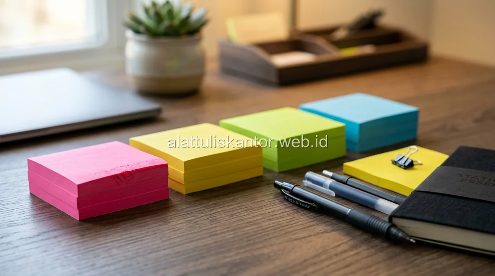

Kanban board fisik masih menjadi metode manajemen visual favorit banyak tim kerja karena memberikan gambaran progres pekerjaan yang mudah dilihat sekilas oleh seluruh anggota tim. Namun, salah satu keluhan paling umum dalam penggunaan kanban board adalah sticky notes yang mudah terlepas dan jatuh dari papan, terutama setelah beberapa kali dipindahkan antar kolom status pekerjaan. Masalah ini bukan sekadar mengganggu estetika board, tetapi berpotensi menghilangkan informasi penting tentang status tugas yang sedang dikerjakan tim.
Artikel ini membahas cara memilih sticky notes grosir dengan perekat kuat yang tepat untuk kebutuhan kanban board kantor, termasuk jenis, ukuran, dan tips penggunaan agar catatan tetap menempel optimal sepanjang siklus kerja tim. Untuk kebutuhan sticky notes grosir dan paket ATK kantor lainnya, tim ATK Prima Distribusi siap membantu via WhatsApp di 0889-8964-3555.
Fakta: Tim yang menggunakan sticky notes premium dengan perekat akrilik mengalami 80% lebih sedikit insiden catatan terjatuh dibanding tim yang menggunakan sticky notes ekonomis berbasis perekat karet.
Ringkasan Memilih Sticky Notes untuk Kanban Board
Sticky notes yang ideal untuk kanban board kantor sebaiknya memiliki perekat kuat berbasis akrilik (bukan perekat karet biasa yang cepat melemah), ukuran minimal 76x76 mm agar cukup ruang untuk menuliskan detail tugas, dan bahan kertas yang cukup tebal agar tidak mudah sobek saat dipindahkan berulang kali antar kolom status. Sticky notes dengan perekat premium dapat menempel dan dilepas berulang kali hingga puluhan kali tanpa kehilangan daya rekatnya secara signifikan, jauh lebih tahan lama dibanding sticky notes ekonomis biasa.
Mengapa Sticky Notes Biasa Sering Gagal di Kanban Board
Sticky notes ekonomis yang dijual di pasaran umumnya menggunakan perekat berbasis karet (rubber-based adhesive) yang dirancang untuk pemakaian sekali tempel dalam durasi singkat, seperti menandai halaman buku atau memberi pesan singkat di meja. Perekat jenis ini cenderung melemah dengan cepat setelah beberapa kali dilepas-tempel, sementara kanban board membutuhkan sticky notes yang dipindahkan berkali-kali dari kolom 'To Do' ke 'In Progress' hingga 'Done' selama siklus kerja tugas berlangsung, kadang selama berminggu-minggu.

Kriteria Sticky Notes yang Ideal untuk Kanban Board
1. Perekat Berbasis Akrilik untuk Daya Tahan Lebih Lama
Perekat berbasis akrilik memiliki struktur molekul yang lebih stabil dibanding perekat karet, sehingga mampu menempel dan dilepas berulang kali tanpa kehilangan daya rekat secara drastis. Sticky notes dengan perekat akrilik premium biasanya dapat bertahan digunakan berulang hingga 40-50 kali sebelum daya rekatnya benar-benar melemah.
2. Ukuran Minimal 76x76 mm untuk Ruang Tulis yang Cukup
Ukuran standar 76x76 mm (3x3 inci) memberikan ruang yang cukup untuk menuliskan judul tugas, nama penanggung jawab, dan estimasi waktu penyelesaian tanpa terlalu penuh, dibanding ukuran yang lebih kecil seperti 38x51 mm yang lebih cocok untuk catatan singkat biasa.
3. Bahan Kertas yang Cukup Tebal
Kertas sticky notes yang terlalu tipis mudah sobek pada bagian perekat saat dilepas dari permukaan board, terutama jika dilakukan terburu-buru. Pilih sticky notes dengan gramasi kertas yang cukup untuk menahan tarikan berulang tanpa robek di bagian tepi yang menempel.
4. Variasi Warna untuk Kategorisasi Visual
Untuk kanban board yang digunakan mengelola berbagai jenis tugas atau prioritas, sticky notes dengan variasi warna memudahkan tim mengategorikan tugas secara visual sekilas, misalnya warna kuning untuk tugas reguler, merah untuk prioritas tinggi, dan hijau untuk tugas yang sudah selesai divalidasi.
Tabel Perbandingan: Sticky Notes Ekonomis vs Premium untuk Kanban
| Parameter | Sticky Notes Ekonomis (Perekat Karet) | Sticky Notes Premium (Perekat Akrilik) |
|---|---|---|
| Jumlah tempel-lepas sebelum melemah | 5-10 kali | 40-50 kali |
| Ketebalan kertas | Tipis, mudah sobek | Lebih tebal, lebih tahan |
| Cocok untuk kanban board aktif | Kurang cocok | Sangat cocok |
| Estimasi harga per pad | Rp5.000 - Rp8.000 | Rp12.000 - Rp20.000 |
Cara Menggunakan Kanban Board Fisik agar Sticky Notes Tetap Awet
- Gunakan permukaan board yang halus dan bersih dari debu, karena permukaan kasar atau berdebu mengurangi daya rekat sticky notes secara signifikan.
- Hindari menempatkan board di area yang terkena sinar matahari langsung atau kelembapan tinggi, karena panas dan lembap mempercepat degradasi perekat.
- Lepas sticky notes dengan gerakan menarik perlahan sejajar permukaan board, bukan ditarik tegak lurus yang berisiko merobek bagian perekat.
- Ganti sticky notes yang sudah terlihat melemah daya rekatnya sebelum benar-benar terlepas dan hilang informasinya.
- Simpan stok sticky notes cadangan di dekat board agar tim dapat segera mengganti tanpa harus mencari ke tempat lain.
Kombinasi Perlengkapan Pendukung Kanban Board yang Efektif
Selain sticky notes berkualitas, board magnetik atau whiteboard dengan permukaan yang halus akan memberikan daya rekat lebih baik dibanding papan gabus (cork board) yang teksturnya tidak rata. Tambahkan juga spidol whiteboard untuk menggambar garis kolom status secara permanen semi-tetap, serta magnet kecil sebagai penanda tambahan untuk indikator prioritas atau tenggat waktu di samping sticky notes utama, sehingga sistem kanban board menjadi lebih informatif tanpa terlalu bergantung pada satu jenis perlengkapan saja.
Studi Kasus: Stabilisasi Kanban Board Tim Produk PT Inovasi Digital Kreatif
Tim produk PT Inovasi Digital Kreatif sebelumnya menggunakan sticky notes ekonomis untuk kanban board mingguan mereka, namun sering mengalami kehilangan informasi tugas karena catatan terjatuh dari board setelah dipindahkan beberapa kali antar kolom status dalam satu minggu kerja. Setelah beralih menggunakan sticky notes grosir dengan perekat akrilik premium, tim tersebut tidak lagi mengalami kejadian catatan terjatuh selama lebih dari tiga bulan penggunaan aktif, sekaligus meningkatkan kepercayaan tim terhadap akurasi informasi yang tertampil di board setiap harinya.
Hasil Nyata: PT Inovasi Digital Kreatif mencatat penurunan insiden catatan terjatuh sebesar 100% dalam 3 bulan, dengan peningkatan efisiensi daily stand-up meeting sebesar 30% karena informasi tugas selalu akurat dan terlihat.
Menghitung Kebutuhan Sticky Notes Grosir untuk Tim
Sebelum memesan dalam jumlah besar, hitung estimasi kebutuhan berdasarkan jumlah anggota tim dan rata-rata jumlah tugas aktif per minggu. Sebagai gambaran, tim dengan 10 anggota yang masing-masing mengelola 3-5 tugas aktif per minggu membutuhkan sekitar 2-3 pad sticky notes standar (100 lembar per pad) setiap bulan, dengan asumsi setiap tugas melalui rata-rata 3-4 kali perpindahan kolom status sebelum selesai. Pembelian grosir untuk kebutuhan tiga hingga enam bulan sekaligus umumnya memberikan harga per pad yang lebih hemat dibanding pembelian bulanan berulang dalam jumlah kecil.
Selain kebutuhan rutin, sisakan sedikit stok cadangan untuk kebutuhan proyek khusus atau workshop perencanaan (planning session) yang kadang membutuhkan sticky notes dalam jumlah lebih banyak dari biasanya dalam waktu singkat, seperti sesi retrospective atau brainstorming tim yang melibatkan banyak catatan sekaligus.
Alternatif Digital vs Fisik: Kapan Kanban Board Fisik Masih Relevan
Di tengah maraknya aplikasi kanban digital seperti Trello atau Jira, banyak yang bertanya apakah kanban board fisik dengan sticky notes masih relevan digunakan. Faktanya, kanban board fisik tetap memiliki keunggulan tersendiri, terutama untuk tim yang bekerja dalam satu ruangan yang sama, karena visibilitas fisik yang lebih tinggi dan tidak memerlukan siapa pun membuka aplikasi atau layar tambahan hanya untuk melihat progres pekerjaan tim. Board fisik juga cenderung mendorong interaksi tim yang lebih spontan saat memindahkan catatan, dibanding klik-klik di layar yang terasa lebih impersonal.
Sebagian tim bahkan menerapkan pendekatan hybrid, menggunakan kanban board fisik untuk pertemuan harian (daily stand-up) dan diskusi cepat, sementara detail teknis tugas tetap dicatat di sistem digital untuk keperluan dokumentasi jangka panjang. Pendekatan ini menggabungkan kelebihan interaksi fisik dengan kemudahan pencarian dan pengarsipan yang ditawarkan sistem digital, tanpa harus memilih sepenuhnya salah satu metode saja.